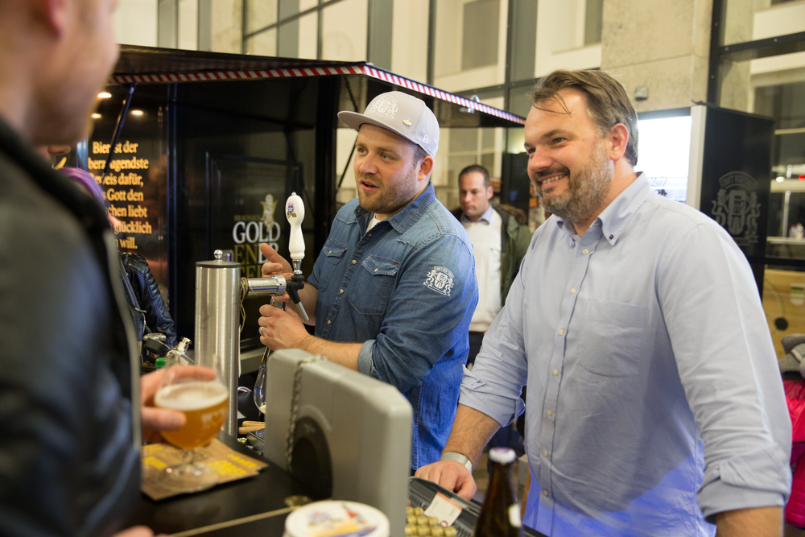
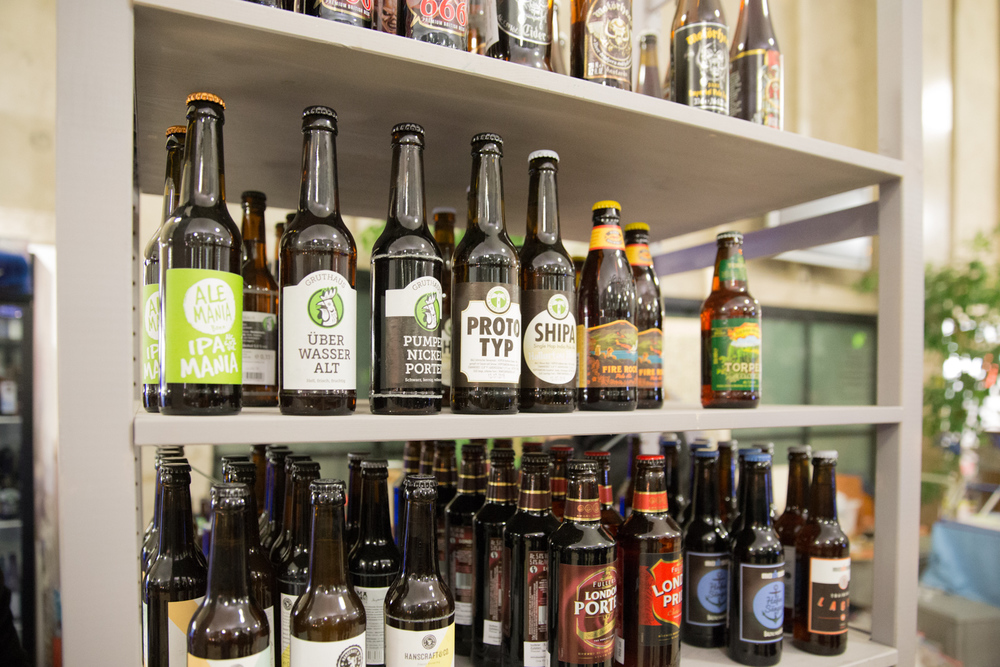
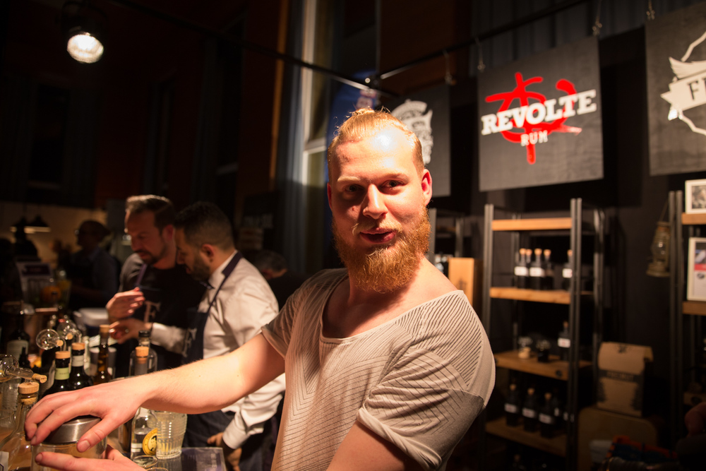
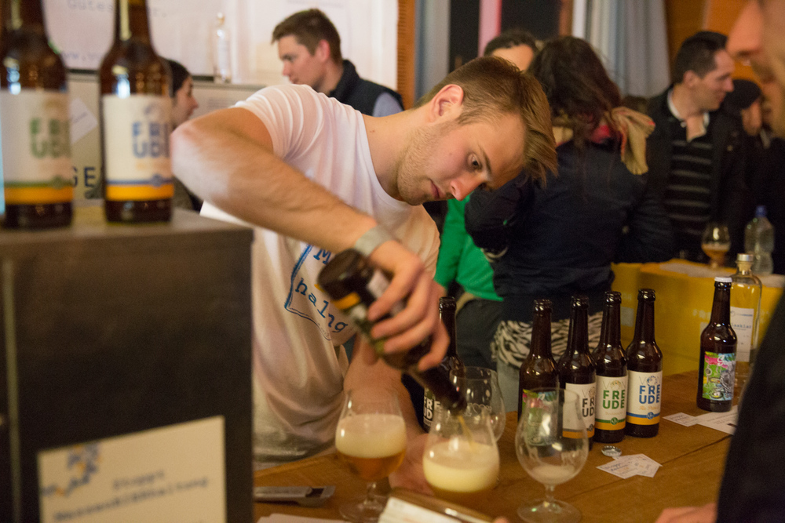
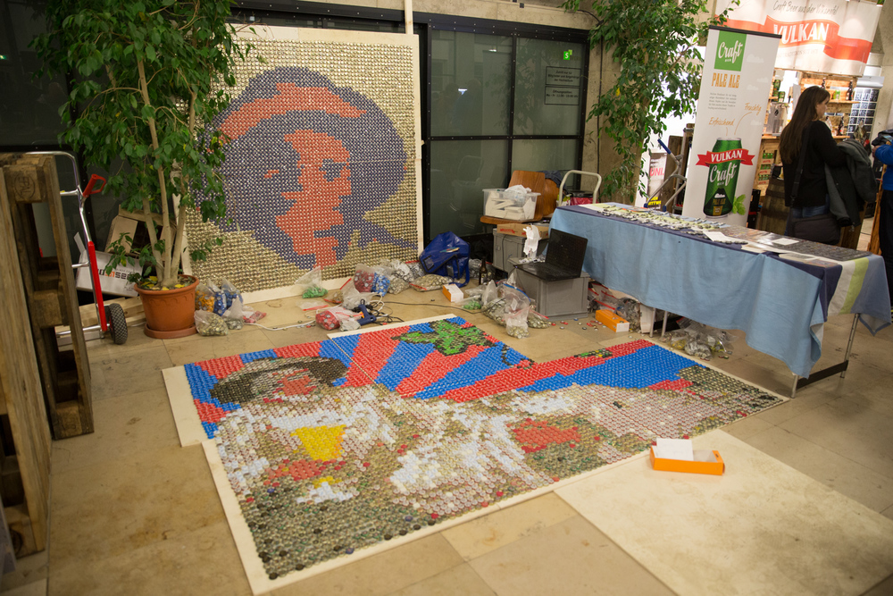
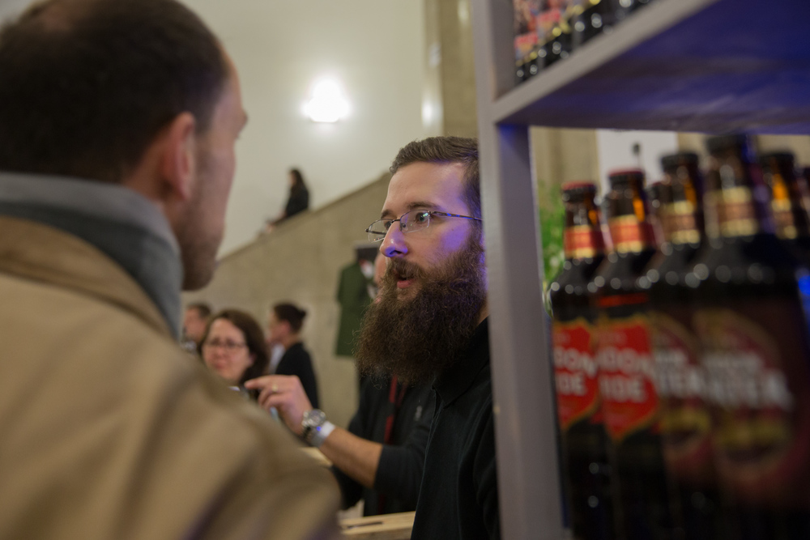
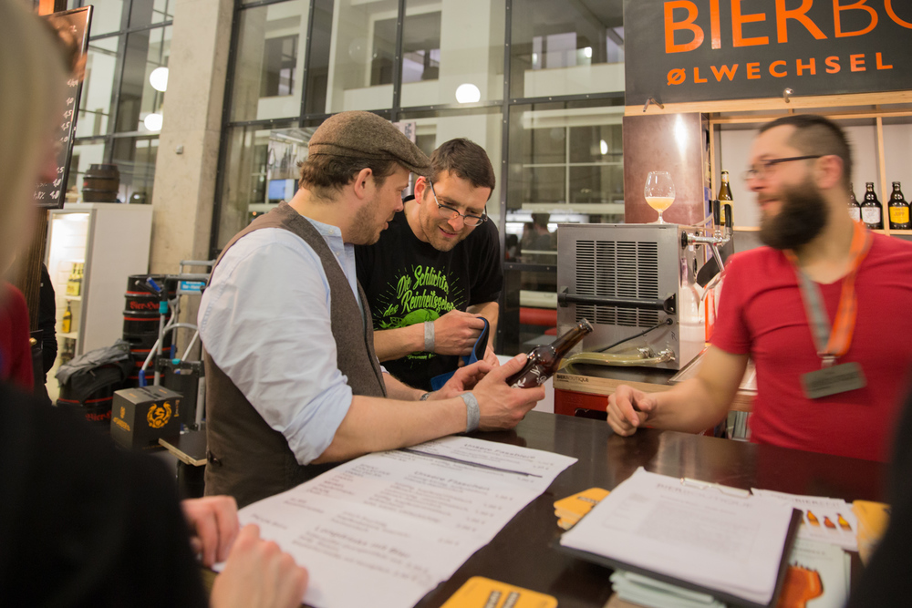
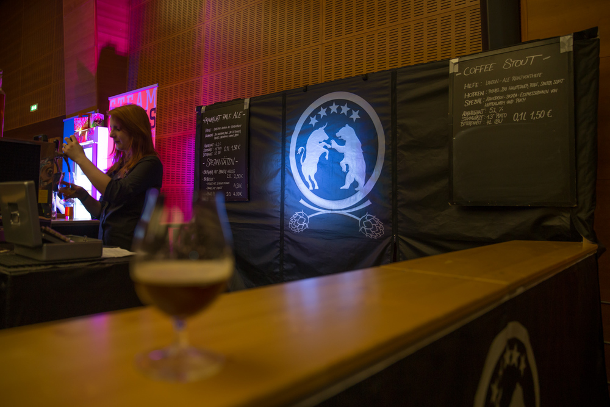

Bericht von der 2. Craft Messe Frankfurt
Die Craft Frankfurt – von der Jahrhunderthalle in den Uni Campus Westend gezogen – diesmal definitiv anders. Vorallem voller. Freitags Abends war teilweise kein Durchkommen. Die Räumlichkeiten waren aber definitiv schöner und passender für die Messe. Gut war auch, dass es mehr Bier vom Fass gab. Bier vom Fass ist einfach besser. Wir haben uns irgendwann zum Stand der Bierbotique zurückgezogen – weniger Gedränge, angenehmer zum gemütlichen Rumstehen und Sitzen – vorallem weils da auch Sitzgelegenheiten gab. Ausserdem war der überlaute, für mich sehr anstrengende Techno, da weniger zu hören. Etwas was ich nie verstehen werde: warum macht man Musik auf ner Messe so laut, dass Gespräche fast unmöglich werden. Aber das muss wohl so bei nem „Hippen Event“.
Schön war der erste Abend trotzdem und wir sind bis zum Ende geblieben. Von dem was ich am ersten Abend getrunken habe, fand ich das Dunkle Export vom Bierhannes, das Onkel Jupp & die Bierfee beim Ölwechsel und das Barrel Aged Milk Stout von Camba am besten.
Samstags dann die Hoffnung, dass es ein wenig leerer ist. Mittags war das dann auch der Fall, aber gegen Abend wurds dann wieder sehr dicht und kuschelig. Damit hätte ich nicht gerechnet. Wo kommen denn plötzlich die ganzen Biertrinker_innen her? Aber ansich solls mir recht sein. Eigentlich isses ja was schönes, wenn Leute mehr auf den Geschmack von unterschiedlichem Bier kommen.
Wirklich gut war diese Craft, dass die Auswahl an Biersorten deutlich vielfältiger war als letztes Mal. Wo mer letztes Mal nach dem säuerlichem suchen musste (Geuze beim Ölwechsel, das Wit von Kühn Kunz Rosen und das Moll beim Braukunstkeller) gabs diesmal fast an jedem Stand zumindest eine andere spannende Sorte ausser IPA. Ich persöhnlich trinken den Abend über nämlich gerne mal was anderes, als nur extrem Hopfiges Bier. So gab es Fassgereiftes, Berliner Weisse, Stouts, Amber Ale und andere belgische Brauarten und sogar Bier mit Gurke.
Mein Lieblingsbier am 2. Tag war der Bourbon Barrel Aged Doppelbock von Vulkan. Eine sehr spannende und gute Brauerei aus der Eifel. Dann das Coffeestout vom Braustil, einer Kleinbrauerei aus Frankfurt. Dazu muss man allerdings sagen, dass bei denen nicht alles genießbar war. Das Frankfurter Pale Ale von ihnen, war das einzige Bier in unserer Runde, was tatsächlich nicht fertig getrunken wurde – aber hey: es gab diesmal überall Kanister für Reste. Das gabs letztes Mal noch nicht. Weiter mim Bier. An hopfigeren Bieren waren meine Highlights das gehopfte Lager von Sander und das Hopfenlust von Glaabsbräu. Beide erschlagen einen nicht mim Hopfen, sind gut ausgewogen, aber nicht langweilig und auch nicht zu hochprozentig. Das Hopfenlust hat sogar nur 4,3 Prozent und eignet sich damit hervorragend für den Sommer. Bei beiden Brauereien, sind die Menschen die Brauen dahinter auch sehr spannend und die Gespräche waren Lehrreich. Seis von der Meinung zum Reinheitsgebot bis hin zu dem Thema, wie man Leuten in Gastwirtschaften erklären muss, dass Bier durchaus Trüb sein darf und das dann nicht schlecht ist.
Gurkenbier gabs an 2 Ständen. Bei Steamwork und bei Hanscraft. Ich find ja ausprobieren immer nett, und bei Hanscraft fand ichs auch in Ordnung schlecht, aber bei Steamwork wars mir zu flach und unausgewogen. Was auch für die andere Sorte galt, die ich dort getrunken habe - das Jasmine. Die Idee der Dampfbrauerei finde ich eigentlich ganz nett, vielleicht muss ich die anderen Sorten nochmal probieren. Was die Interationalität betrifft, gabs diesmal neben And Union, aus Südafrika, auch die Beernerds, die Bier aus Australien vertreiben, wieder zuwachse neben den ganzen Bieren aus den USA und der UK.
Zu guter Letzt noch eine Regionale Freude: Die Craftbrauschmiede, die letztes Mal mit ihrem ersten Sud da waren sind in Produktion gegangen und hatten diesmal 6 Biere dabei. Ich fand das Weizen IPA sehr lecker und freue mich über eine neue Brauerei aus der Region.
Es war alles in allem eine schöne Craft mit spannenden Bieren und Menschen. An Kleinigkeiten gibt’s durchaus noch Verbesserungsbedarf (Wasserkanister zum Ausspülen, die Musik nicht so laut machen, das Gespräche schwer werden, diesmal fast zu wenige Essstände) aber es ist schön zu sehen, wie sich das entwickelt und auch beim 2. Mal eine gute und spannende Veranstaltung war.
*Vielen Dank an unseren Marc für die nachfolgenden Bilder! *
       

Ersten Kommentar schreiben